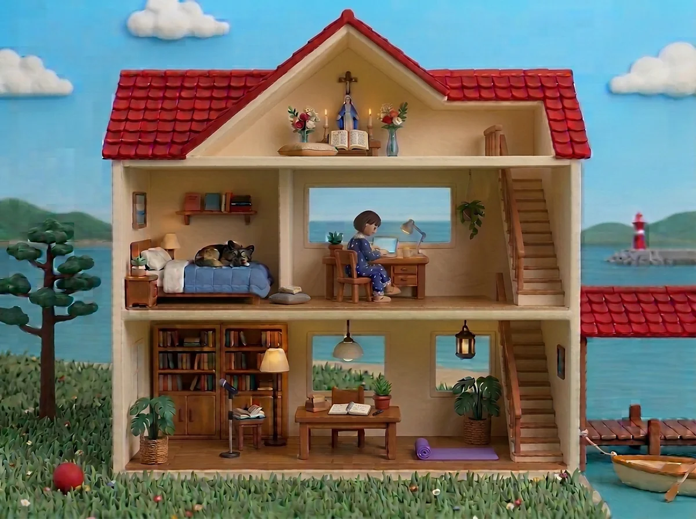
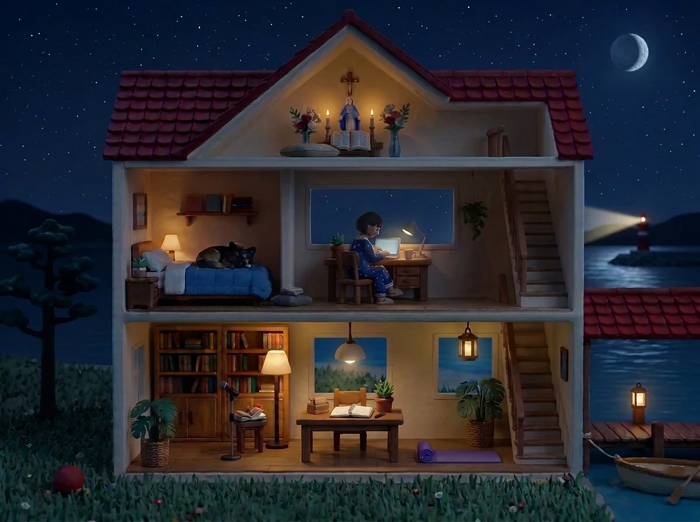

루틴 하우스 — 둥지
방을 누르면 그 루틴의 기록이 열리는 집입니다. 부산의 실제 해 뜨고 지는 시각을 따라 낮 그림과 밤 그림을 오가고, 저녁부터는 그날 기록이 있는 방에만 램프가 켜집니다. 하루를 밤에 램프로 돌아보는 그림 — 2026-10-19 밤 러프 한 장에서 시작해 10-21 낮에 1판이 섰습니다.
🔒 잠긴 자리라 주소는 적지 않습니다 — 화면 공유로만 보여 드립니다같은 집, 낮과 밤
빨간 지붕 인형의 집. 왼쪽은 땅과 이어진 마당(공 하나), 오른쪽은 바다 위 나루에 집 벽에서 이어진 지붕이 덮입니다. 밤에는 별하늘 아래 모든 방에 전등이 켜지고, 기록이 있는 방은 램프 한 겹이 더 켜집니다. 달은 자리를 두고 오늘의 위상만 바뀝니다.


일곱 방
방마다 열리는 기록이 다르고, 기록이 남는 자리도 다릅니다. 본문이 밖으로 나가는 방은 하나도 없습니다 — 새벽 글은 날짜·제목·글자 수만 셉니다.
오늘 구절 한 줄과 체크. 성경과 공책이 펼쳐져 있습니다.
하루 닫기. 누우면 인형이 잠들고, 밤톨이는 침대 곁 방석에서 함께 잡니다.
몽롱쓰기 달력 — 쓴 날엔 해 스티커, 칸엔 글자 수. 주·월 합계가 바로 보입니다. 글이 들어오면 찻잔 김이 꺼집니다.
오늘 읽은 책 제목과 문장 수집, 그리고 스페인어 동화 앱에서 읽은 것. 읽는 방이라 여기서만 돋보기를 씁니다.
글감 카드 서른한 장(정원🌿) 가운데 하나를 뽑아 웹에서 바로 쓰고 저장합니다. 목적지는 블로그 저널의 활성화.
운동 체크. 따로 쓰는 운동 노트의 기록을 그대로 읽어 옵니다.
산책 — 「산책 나가요」와 「다녀왔어요」 둘뿐. 몇 번·몇 분은 화면이 셉니다.
지은 순서
그림을 뽑기 전에 방 배치만 보는 러프 SVG를 바다가 그려 PNG로 보냈습니다. 한 줄 바뀔 때마다 판을 올리고 말씀 원문을 회의 메모에 붙여, 여덟 번 바뀌어도 넘길 정본은 한 장으로 남았습니다.
「그림보다 방을 누르면 열리는 기록 화면 쪽을 먼저 짜자」 — 방마다 무엇이 열리고 어디에 남는지를 정하고, 셋 중 「밤에 램프」 안을 골랐습니다. 물건이 바뀌는 안은 기록 전 모양이 기준이라 한눈에 안 읽힌다는 판단이었습니다.
화면은 나무🌳, 그릇(자료 뽑기·저장소·아침 내려받기·잠금)은 김리🔨, 글감과 에세이 뼈대는 정원🌿. 접점 한 장(기록 파일 꼴과 API 둘)을 브리프에 박아 세 식구가 바다 없이 꼴과 셈을 맞췼습니다. 러프 SVG를 집 바탕으로 쓰고 그림 없이 1판이 섰습니다.
캔바로 시작했다가 같은 날 저녁 Gemini 그림으로 바꿨습니다. 집은 통째로 다시 그리지 않고, 인형과 밤톨이는 초록 바탕 스프라이트로 따로 뽑아 나무가 얹습니다 — 고칠 때마다 집 화질이 깎여서였습니다.
무엇이 예상과 달랐나
- 그림이 없어도 기록 화면은 먼저 섭니다. 러프를 바탕으로 쓰니 그림을 기다리는 날이 없었습니다.
- 그림 모델은 「지워라」와 「한 장에 하나」는 잘 듣고, 「상대 위치로 옮겨라」는 네 번 다 못 했습니다. 방석은 지우고 나무가 좌표에 얹는 길로 돌았습니다.
- 잠긴 사이트의 「눌러도 안 돼요」는 식구 둘이 로컬에서 재현하지 못했고, 실제 자리에서 한 번 눌러 보니 5분 만에 원인이 나왔습니다. 배포본 고장은 먼저 그 자리에서 봅니다.
- 캔바 판 집 위에 방만 옮긴 안은 통했지만, 「캔바보다 나노바나나 그림이 훨씬 마음에 들어」 한마디로 도구가 바뀌었습니다. 되돌릴 자리는 폴더에 그대로 두었습니다.
같은 집인데 낮엔 밝고 밤엔 배경도 같이 어두워지고 넘 아름답지?햇살 · 2026-10-19
그림 · 햇살(Gemini) · 러프·회의 메모 · 바다 🌊 · 화면 · 나무 🌳 · 그릇·잠금·아침 루틴 · 김리 🔨 · 글감 카드 · 정원 🌿
정본은 잠긴 사이트(레포 POGNARU/dungji, 비공개)와 볼트 클로드 에이전트/나무의 기록/261019 루틴 집 첫 장/회의 메모.md. 이 페이지는 과제 기록 사본이며 주소는 싣지 않습니다.